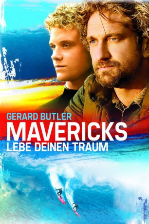

#1601 Mavericks
Alternativ: Chasing Mavericks
 
 IMDB-Wertung: 7.2 / 10
IMDB-Wertung: 7.2 / 10  Metascore: 45
Metascore: 45 
Das junge Surfertalent Jay Moriarty schwänzt mit 16 Jahren die Schule und sieht dafür lieber den Surfern und Sportlern im Meer zu. Einen dieser Sportfanatiker kann Jay überreden, ihn zu trainieren, und so wird Rick "Frosty" Hesson zu Jays Mentor, der auch schnell das unglaubliche Talent seines neuen Schützlings erkennt. Neben dem Sport, der sie verbindet, bauen die beiden auch eine persönlich enge Beziehung auf, in der Frosty für Jay zu einer Art Vaterersatz wird. Nach den ersten Versuchen auf dem Surfbrett folgen schnell zahlreiche Gewinne von verschiedenen Wettbewerben. Durch den Sport lernt Jay ganz neue Seiten am Leben kennen und reift an ihnen. Dazu kommen auch neue Veränderungen wie die erste Liebe und der unbedingte Wille, der beste Surfer der Welt zu sein.
Jahr: 2012
Dauer: 116 Minuten
FSK: 6
Land: USA Studio: 20th Century FoxTonspuren: DTS - ,
Untertitel: Deutsch,
Auflösung: 1080p (1920x1040) Größe: 10854 MB
Genre: Biographie, Drama, Sport
Regisseur:  Michael Apted,
Michael Apted,  Curtis Hanson
Curtis Hanson
Drehbuch: Kario Salem, Jim Meenaghan, Brandon Hooper
Soundtrack: Chad Fischer
Darsteller:
 Gerard Butler als Frosty Hesson
Gerard Butler als Frosty Hesson Jonny Weston als Jay Moriarity
Jonny Weston als Jay Moriarity Elisabeth Shue als Kristy Moriarity
Elisabeth Shue als Kristy Moriarity Abigail Spencer als Brenda Hesson
Abigail Spencer als Brenda Hesson- Leven Rambin als Kim Moriarity
- Peter Mel als Magnificent Two
- Devin Crittenden als Blond
 Taylor Handley als Sonny
Taylor Handley als Sonny- Cooper Timberline als Young Jay
- Maya Raines als Roquet
- Harley Graham als Young Kim
 Jenica Bergere als Zeuf
Jenica Bergere als Zeuf James Anthony Cotton als Frank
James Anthony Cotton als Frank- Channon Roe als Bob Pearson
- Andrew Pierno als Sonny Crew #1
- Richard Gross als Brenda's Father
- Adam Del Rio als Capitola Mall Druggie
- Keegan Boos als Young Sonny
- Christopher Sweeney als Eli
- Brandon Hooper als Photographer on Boat
- Michael Acosta als Pickup Driver , uncredited
- Derek W. Adam als Driver in Firebird , uncredited
 AnnaCorey als Kate Bonfire Hostess , uncredited
AnnaCorey als Kate Bonfire Hostess , uncredited Andy Arness als Blue-Collar Worker , uncredited
Andy Arness als Blue-Collar Worker , uncredited- Samuel Baca als Driver / Neighbor , uncredited
- Alex Bretow als Beach Cruiser , uncredited
- Jacquelina Cardinale als Surfer Girl , uncredited
- Nestor Cuellas als Blue Collar Worker , uncredited
- Robert Cure als Surfer #2 , uncredited
- Galen Davis als Student , uncredited
 Scott Eastwood als Gordy , uncredited
Scott Eastwood als Gordy , uncredited- Sammy Elliott als Cute surfer , uncredited
- Jonathan Grebe als Mavericks Spectator , uncredited
- Mark Daniel Hodge als Neighbor , uncredited
- Mike Howard als Neighbor / Bike Rider , uncredited
- Jeffrey W. Jenkins als Funeral attendee , uncredited
 Alexander Kanellakos als Surfer #1 , uncredited
Alexander Kanellakos als Surfer #1 , uncredited- Nate Komari als High School Student , uncredited
- Janean Christine Mariani als Mavericks Videographer , uncredited
- Deanna Marks als Molly , uncredited
- Julian Martinez als Surfer , uncredited
- Cloud Mykals als Surfer #3 , uncredited
- Lourdes Nadres als Mavericks Spectator , uncredited
- Steven Jon Nichols als Featured Spectator , uncredited
- Nkechi als Mavericks Photographer , uncredited
- Montgomery Paulsen als Nosy Neighbor , uncredited
- Jekyns Pelaez als Neighbor , uncredited
- Brian Sampson als Blue Collar Worker / Driver , uncredited
- Jon Komp Shin als Surfer , uncredited
- Etienne Vick als Driver 1966 VW , uncredited
Datei: X:\2012(G-M)\Mavericks (2012, FSK6, 1920x1040).mkv seit 24.07.2015
Festplatte: HD 2012(A-M)
 Es gibt insgesamt 112 Filme in der Gruppe '2012(G-M)'
Es gibt insgesamt 112 Filme in der Gruppe '2012(G-M)'